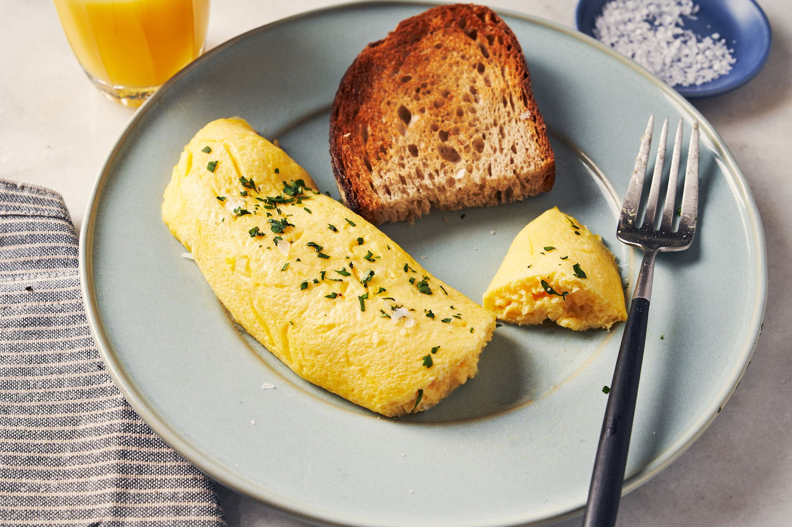

French Omelette

Carbonara is a traditional Italian dish that exemplifies one of the tenets of the cuisine: simplicity. Composed of only a few ingredients,
quality of each individual component really gets to shine. Plus, it's dead simple to make. Serves two.
Ingredients
- 2 large eggs
- 3 tbsp butter
- salt
- chives for garnish
Preperation
- Heat a nonstick skillet, approx 8 inches in diameter (a crepe pan can also work), over medium-high to high heat
- Add 2 tbsp of the butter, enough to thoroughly coat the pan. If it melts quickly but doesn't instantly brown, the heat is correct. If it browns, discard and let the pan cool a bit.
- Whisk the eggs vigourously with a pinch of salt for at least a minute. They should be very liquid and frothy at the edges. Add to pan and immediately begin moving the mixtrue rapidly with chopsticks.
- The goal is to prevent a scramble, and make a loose custardy texture. Once this is achieved, approx. 45 seconds, shake the pan to even out and let sit to solidify.
- With the bottom set and the top still glistening and jiggly, fold the omelette over on itself to form a roll with the chopsticks and turn out to a plate, pretty side up if possible.
- Rub the remaining butter on top and garnish with minced chives.
Return to homepage